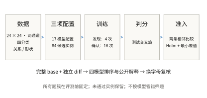
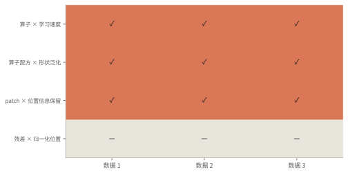
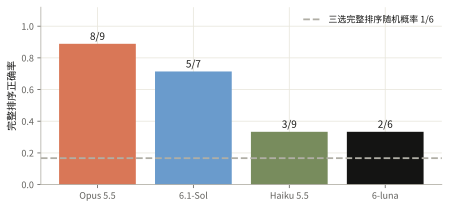

图像分类补充：算子、形状与分块
4个题簇、12个实例中，9个实例通过独立确认，形成9道三选排序题及9道字母重排。新增证据覆盖短预算算子学习、形状泛化与无位置编码的分块；残差与归一化位置的3个实例未通过，保留原结果。
- 数据 受控合成图像
- 题型 三选完整排序
- 训练重复 4 次发现 + 16 次确认
- 计算 360-1 / ophis
从受控图像构造可复现的分类任务

图像为24×24、两通道、四分类，覆盖相对位置与局部形状。4个题簇在3个全新数据seed上形成12个实例，去重后84个候选、17种模型。比较包括短预算算子学习、形状泛化、无显式位置编码时的图像分块，以及残差与归一化位置；每簇均保留完整局部对照。算子题比较完整训练配方，不解释为参数或算量匹配的单一算子效应。
排序使用独立测试集上的交叉熵，越低越好。分类正确率、训练交叉熵、分布外样本和数据捷径探针用于解释差异，不能事后替换排序指标。
84个候选、16个确认训练seed，共1344次训练全部核验通过。混淆矩阵来自预选数据seed 842901、训练seed 400：位置CNN训练300步，形状mean-pool CNN训练1200步；测试准确率分别为99.22%和91.80%。另图展示这两个固定候选的全部16个seed：测试交叉熵分别为0.0488 ± 0.0271和0.3289 ± 0.4037，±为样本标准差。分布外测试仅作泛化检查。


未通过确认的题目也保留在覆盖图中
发现阶段只用验证集固定顺序。确认阶段使用独立的 16 个训练 seed，对两条相邻比较做单侧配对符号检验。Holm 校正覆盖本批全部 24 条冻结假设，校正 p ≤ 0.05，且平均差值至少 0.005。分类首批、分类补充批和生成批分别定义检验族；未声称跨批联合错误率仍为 5%。它检验训练 seed 上差异方向的稳定性，不是期望均值差的显著性检验。

全部相邻差值与拒绝原因
| 实例 | 平均差值 | 校正 p | 通过 |
|---|---|---|---|
| 算子 × 学习速度 · 842901 | 0.19987 | 0.00036621 | 是 |
| 算子 × 学习速度 · 842901 | 0.43624 | 0.00036621 | 是 |
| 算子 × 学习速度 · 842902 | 0.20969 | 0.00036621 | 是 |
| 算子 × 学习速度 · 842902 | 0.46162 | 0.00036621 | 是 |
| 算子 × 学习速度 · 842903 | 0.21648 | 0.00036621 | 是 |
| 算子 × 学习速度 · 842903 | 0.40212 | 0.0020752 | 是 |
| 算子配方 × 形状泛化 · 842901 | 1.1041 | 0.00036621 | 是 |
| 算子配方 × 形状泛化 · 842901 | 2.9457 | 0.00036621 | 是 |
| 算子配方 × 形状泛化 · 842902 | 1.1438 | 0.00036621 | 是 |
| 算子配方 × 形状泛化 · 842902 | 3.0555 | 0.00036621 | 是 |
| 算子配方 × 形状泛化 · 842903 | 1.1278 | 0.00036621 | 是 |
| 算子配方 × 形状泛化 · 842903 | 2.713 | 0.00036621 | 是 |
| patch × 位置信息保留 · 842901 | 0.28606 | 0.00036621 | 是 |
| patch × 位置信息保留 · 842901 | 0.19362 | 0.00036621 | 是 |
| patch × 位置信息保留 · 842902 | 0.36288 | 0.00036621 | 是 |
| patch × 位置信息保留 · 842902 | 0.19423 | 0.0020752 | 是 |
| patch × 位置信息保留 · 842903 | 0.30283 | 0.00036621 | 是 |
| patch × 位置信息保留 · 842903 | 0.22282 | 0.00036621 | 是 |
| 残差 × 归一化位置 · 842901 | 0.70218 | 0.0020752 | 是 |
| 残差 × 归一化位置 · 842901 | -0.39756 | 1 | 否 |
| 残差 × 归一化位置 · 842902 | 0.33749 | 0.0020752 | 是 |
| 残差 × 归一化位置 · 842902 | 0.40758 | 0.11522 | 否 |
| 残差 × 归一化位置 · 842903 | -0.33072 | 1 | 否 |
| 残差 × 归一化位置 · 842903 | 0.83785 | 0.0020752 | 是 |
完整排序和换字母后的稳定性分开计算
所有通过确认的题都进入四模型评测。重复数据实例和字母置换不是独立新题，下面不报告独立二项置信区间。API 缺失单列；单轮内已返回的错误或格式失败不会重抽。

本批一直输出最常见字母顺序可得 22.2%。这是准入后标签分布的事后描述，不能与事先固定的随机基线混同。
| 模型 | 主问题完成 | 已有回答模板宏平均 | 可解析回答的两两一致度 | 换字母：一致 / 有效配对 |
|---|---|---|---|---|
| Opus 5.5 | 9/9 | 88.9%（3/3 簇） | 96.3%（9 题） | 8/9 |
| 6.1-Sol | 7/9 | 72.2%（3/3 簇） | 85.7%（7 题） | 3/6 |
| Haiku 5.5 | 9/9 | 33.3%（3/3 簇） | 63.0%（9 题） | 7/9 |
| 6-luna | 6/9 | 22.2%（3/3 簇） | 55.6%（6 题） | 1/5 |
主问题正确数为 Opus 8/9、Haiku 3/9、6.1-Sol 5/7、6-luna 2/6；后两者分别缺2、3个主回答，接口缺失不计错。形状题对 Opus 和 Haiku 均为3/3，但短训关系题与无位置编码分块题能使“CNN更适合图像”“分块越细越好”的直觉失效。已完成主题及重排的候选顺序一致数分别为 Opus 8/9、Haiku 7/9、Sol 3/6、Luna 1/5，说明重排后的复答并不稳定；当前设计不能将变化唯一归因于字母位置。只有3类通过的题簇，不能据此建立总体模型排名。
预先固定的表面规则
{
"more_parameters": {
"admitted": 9,
"ordered": 9,
"tie": 0,
"not_applicable": 0,
"correct": 3,
"comparable_pairs": 27,
"correct_pairs": 15,
"accuracy_when_ordered": 0.3333333333333333,
"accuracy_on_comparable_pairs": 0.5555555555555556
},
"more_training_steps": {
"admitted": 9,
"ordered": 0,
"tie": 9,
"not_applicable": 0,
"correct": 0,
"comparable_pairs": 0,
"correct_pairs": 0,
"accuracy_when_ordered": null,
"accuracy_on_comparable_pairs": null
},
"deeper_model": {
"admitted": 9,
"ordered": 0,
"tie": 9,
"not_applicable": 0,
"correct": 0,
"comparable_pairs": 0,
"correct_pairs": 0,
"accuracy_when_ordered": null,
"accuracy_on_comparable_pairs": null
},
"larger_kernel": {
"admitted": 9,
"ordered": 0,
"tie": 0,
"not_applicable": 9,
"correct": 0,
"comparable_pairs": 0,
"correct_pairs": 0,
"accuracy_when_ordered": null,
"accuracy_on_comparable_pairs": null
},
"residual": {
"admitted": 9,
"ordered": 0,
"tie": 9,
"not_applicable": 0,
"correct": 0,
"comparable_pairs": 0,
"correct_pairs": 0,
"accuracy_when_ordered": null,
"accuracy_on_comparable_pairs": null
},
"smaller_patches": {
"admitted": 9,
"ordered": 3,
"tie": 0,
"not_applicable": 6,
"correct": 0,
"comparable_pairs": 9,
"correct_pairs": 0,
"accuracy_when_ordered": 0.0,
"accuracy_on_comparable_pairs": 0.0
}
}正确排序和可靠解释需要分别核验
较可靠的解释需要同时识别直接像素加权的学习路径、小数据下的训练—测试差距，以及patch内部像素顺序与跨patch顺序的区别。75步关系题的MLP训练和测试均优于CNN、ViT；形状题中MLP训练交叉熵约0.24，却在测试达到约4，支持泛化困难。无位置编码时大patch更好，加入位置编码后的诊断均值顺序反转，但该诊断未额外作显著性确认。排序答对也可能伴随错误论证：32→32的patch投影不必丢细节；加性四类logits能够判定主导位移方向；AdamW也没有“学习率×步数”的位移硬上界。完整审核保留每条公开原文和对应证据，不将这些总效应说成唯一机制。
| 模型 | 代码事实支持 | 关键因素支持 | 因果表述不成立 |
|---|---|---|---|
| Opus 5.5 | 0/9 | 0/9 | 5/9 |
| 6.1-Sol | 5/7 | 3/7 | 0/7 |
| Haiku 5.5 | 0/9 | 0/9 | 1/9 |
| 6-luna | 3/6 | 1/6 | 0/6 |
解释评分由本次研究 agent 按冻结标准逐条核查，是可复核的定性判断，不是多位专家独立评审的一致意见。这里只统计主问题的公开回答；部分支持、无法判断另存审核记录。关键因素得到局部对照支持，不代表证明了唯一内部机制。下方可逐题检查原话、证据和判断。
三项完整配置和测试分布
实际发送的完整题面
完整局部对照：改变什么，测试指标如何变化
这些对照用于描述和核验解释，不是新增的显著性筛选。多字段变化不能归因为其中一个字段；单字段干预也不证明唯一内部机制。测试指标越低越好。
公开解释审核
出题时预先定义的解释目标
共享完整代码保留可还原性
每个 choice 的 diff 都独立相对同一 base，训练、优化器和所有配置改动都显式呈现。自动重建最终完整代码，差异过大时显示完整文件。
本批主问题相对逐选项完整代码，UTF-8 总字节减少 45.1%。逐题范围 42.8%–48.5%。这是字节压缩率，不是 token 压缩率。
结论适用范围
- 本批只用明确规则合成的图像，不能外推到自然图像。设计依据第一批训练和验证轨迹，在读取模型回答前冻结；新数据seed为842901–842903，发现训练seed为300–303，确认训练seed为400–415，不复用第一批显著性。
- 4个发现seed仅确定排序方向；16个确认seed用单侧配对符号检验，并对全部24条冻结相邻比较作Holm校正，同时要求平均测试交叉熵差至少0.005。检验针对固定数据下训练seed的配对胜率，不是期望交叉熵差的显著性检验。
- 9个实例通过确认；残差与归一化位置的3个实例未通过，完整保留。诊断对照只作描述性证据，未按主题规则逐一确认，不能把其均值差称为显著或据此断言唯一机制。三个同簇数据实例与字母重排也不构成独立模型能力样本。
- 关系任务仍有单对象位置先验：训练集拟合的单通道质心基线测试准确率为59.18%–63.09%。形状的峰值、面积、能量基线为37.89%–40.43%，仍有低阶线索。预固定192个形状测试样本的像素逆解均正确，仅证明这些样本可区分。
- 质量图中的形状候选使用mean pooling，属于预定诊断配置。其16个seed的训练交叉熵均值为0.3184，测试范围为0.0134–1.2945；训练与测试都存在明显波动，单个seed的91.80%准确率不代表整体稳定性。
- 源码与保存文件逐项精确核验哈希；CPU复算GPU结果及跨PyTorch版本重渲染采用明确数值容差，不声称跨设备逐位一致。